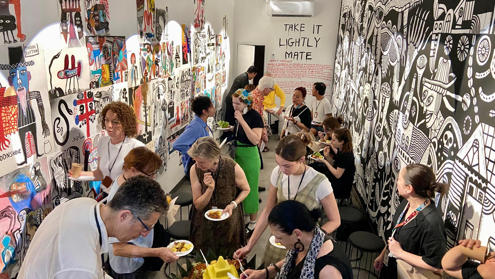
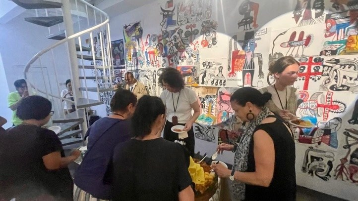
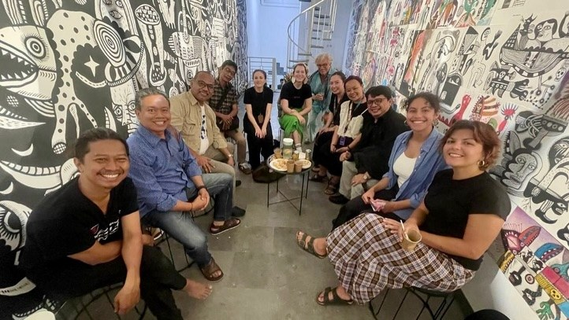
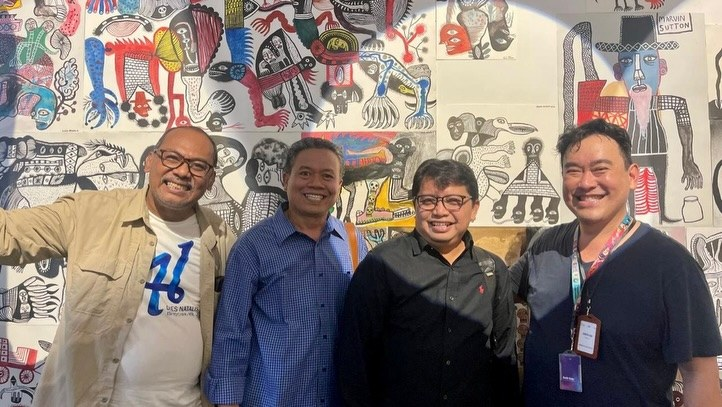
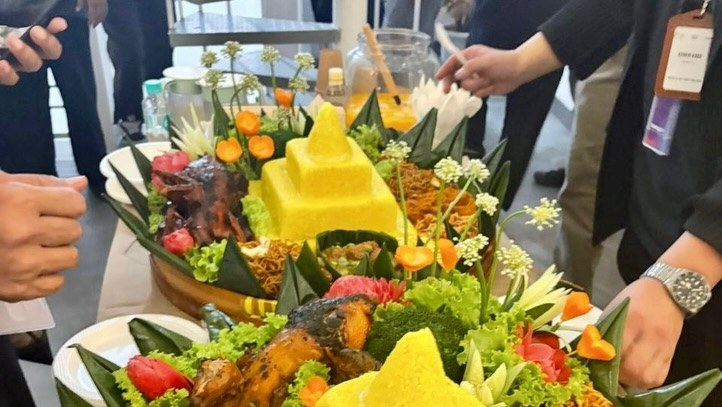
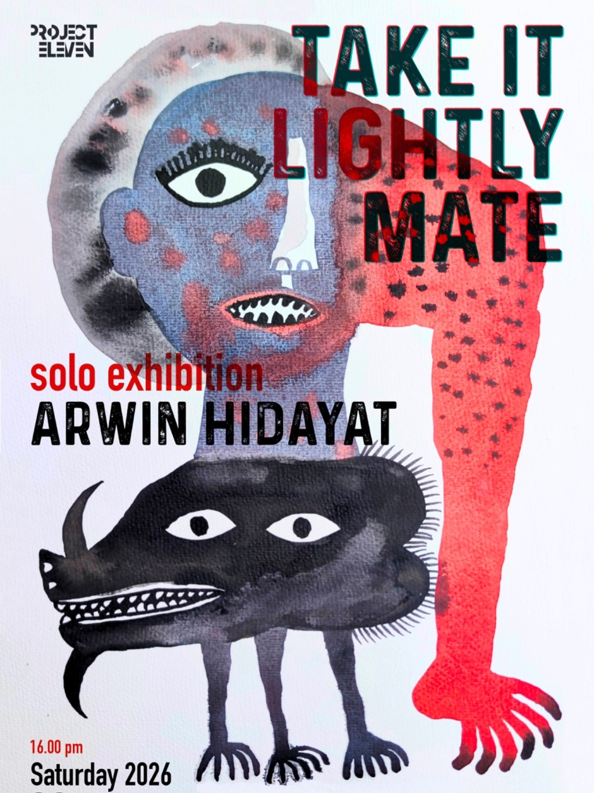

Yogyakarta, Indonesia
Eleven Gallery is Project Eleven’s gallery space in Yogyakarta, Indonesia — a home for exhibitions, residencies and community initiatives that bring Indonesian and Australian artists and audiences together. The gallery opened its doors in June 2026.
Eleven Gallery officially opened its doors with a soft opening held alongside Arwin Hidayat’s solo exhibition. The evening welcomed friends from AIAF, Project 11 partners, and invited guests — thank you for joining us, spending time with the works, sharing conversations, and celebrating the opening of this new space.
We hope Eleven Gallery will continue to grow as a place where art, ideas, and collaborations come together.





Working through an intuitive visual language, Arwin constructs a world inhabited by hybrid figures, playful gestures, and imagined creatures. Balancing humor with subtle tension, the exhibition invites viewers to reconsider the ordinary through forms that are both familiar and strange.
Rather than seeking certainty, Take It Lightly Mate embraces ambiguity, encouraging us to encounter the unexpected with curiosity—and perhaps, to take things a little more lightly.